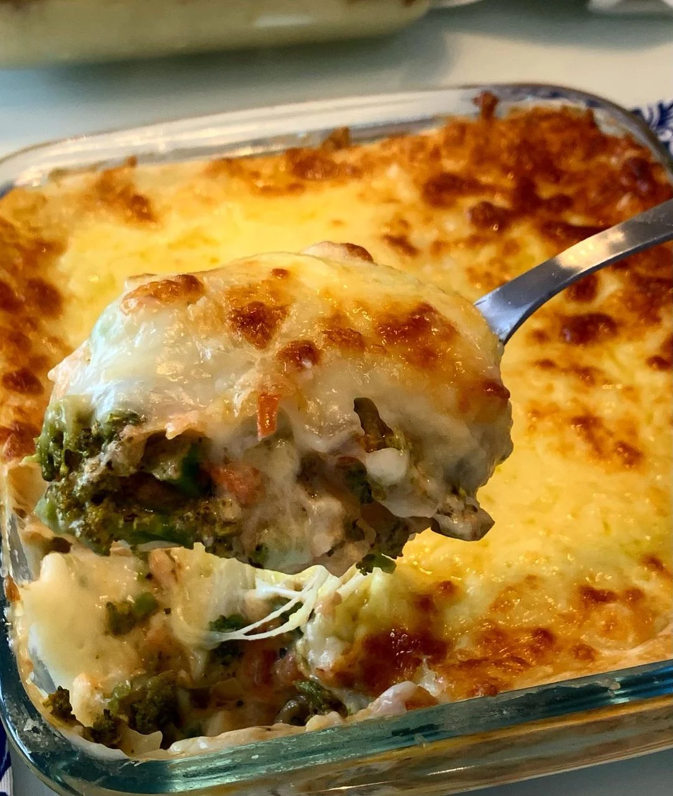

Home
Escondidinho de Brocolis

Description
Recipe by Laissa
Delicious and healthy meal. Chef's favorite!
Ingredients
- Creme de Leite
- Brocolis
- Queijo
- Batata
- Carne ou Presunto ou Bacon
Steps
- Ferver o brocolis em agua e leite (mesma quantidade de agua e leite)
- Molho branco - 4 batatas fervidas + 1 caixa de creme de leite + queijo a gosto + sal + 1 colher de manteiga ou margarina (bater tudo no liquidificador)
- montagem - colocar os broclis na forma e cobrir com molho branco. acrescentar a carne, depois outra camada de molho branco e cobrir com fatias de queijo
- forno de 30 a 40 min (ou ate gratinar) em 180 graus